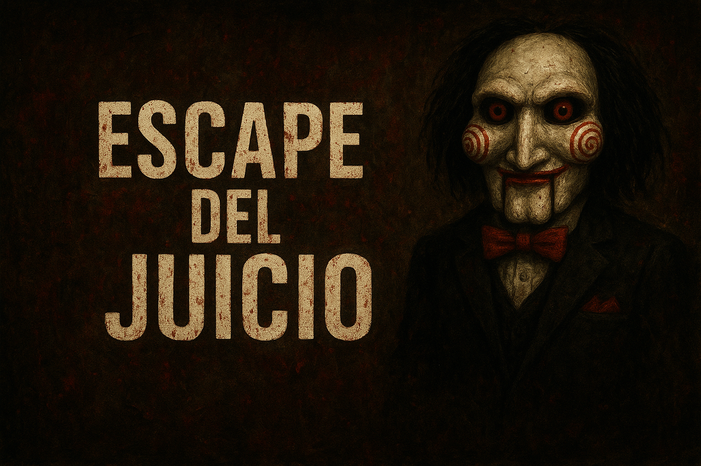
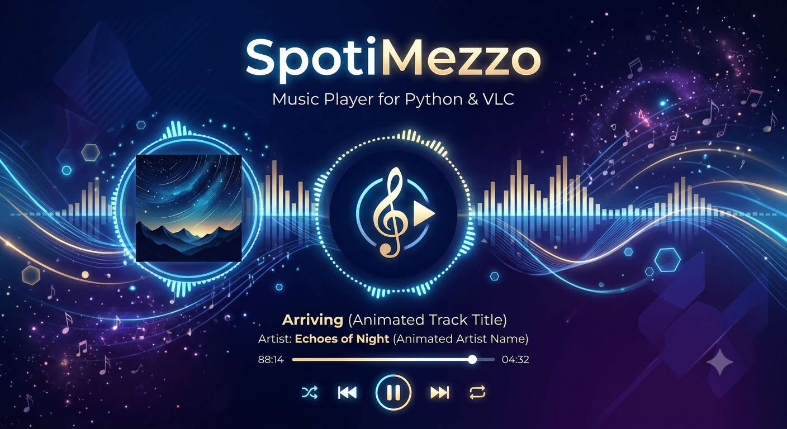
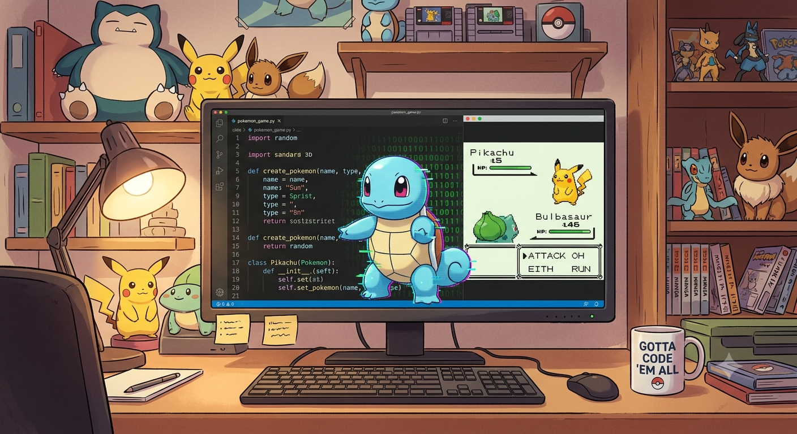

Soy Joaquín Mezzomo. Actualmente soy estudiante del Instituto Huergo, donde estoy cursando la carrera de Técnico en Computación.
A futuro, me gustaría dedicarme al desarrollo web y a la creación de software. Me considero una persona diligente, responsable y con capacidad para trabajar en equipo.
Además de la programación, me gusta escribir. He participado en las cuatro instancias del concurso literario del instituto.
También practico Taekwondo y actualmente soy cinturón verde.
A su vez, estoy cursando el programa de Diploma Dual, proporcionado por Academica International Studies. Actualmente me encuentro en el primer año, cursando las materias de Inglés II y Criminología.
Actualmente, poseo conocimientos en Python, HTML, CSS y SQL, además de un manejo básico de Photoshop.
Tengo experiencia utilizando GitHub y Git Bash, así como herramientas de Inteligencia Artificial como apoyo para el análisis, la resolución de problemas y el desarrollo de ideas.
Poseo habilidades de comunicación y trabajo en equipo, y actualmente llevo adelante un emprendimiento junto a un compañero de mi institución educativa.
Cuento con un nivel fluido de inglés, con capacidad para la lectura, escritura y comunicación oral.


Proyecto del instituto, reproductor de música. Funciona de manera local con VLC
Ver en GitHub →
Gracias por revisar mi portfolio, estare atento a cualquier comentario u oportunidad.
Descargar CV ↓